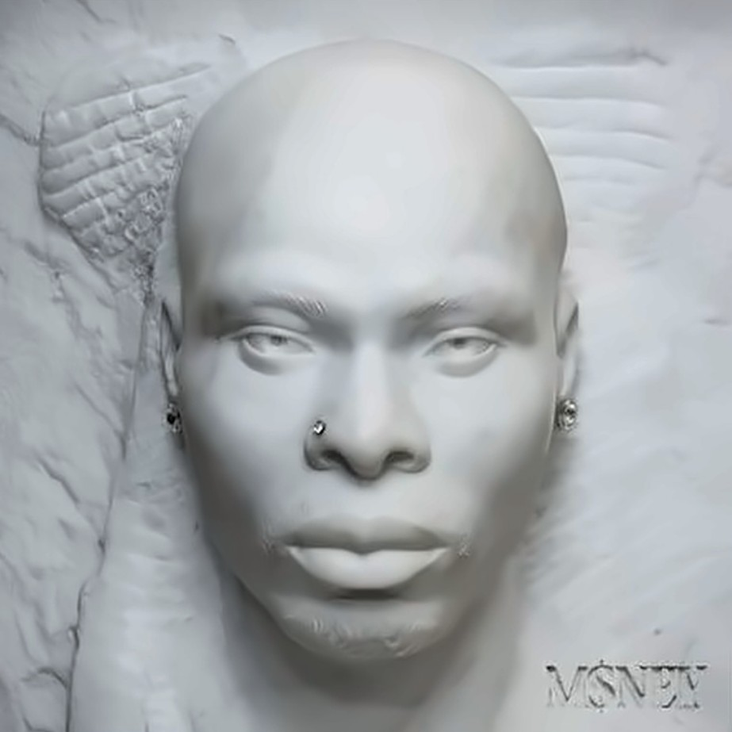
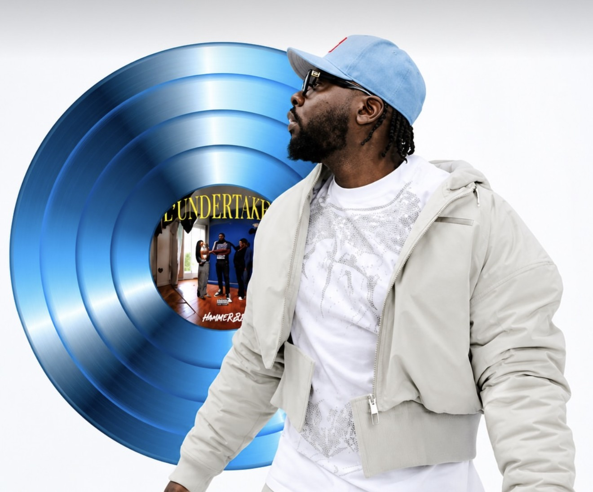

Ayra Starr and Zayn take No. 1 on the UK Afrobeats chart
“Heaven Baby” climbs to the top in its ninth week, Asake appears twice in the top three, and Davido and Fola land a new entry. Here's this week's top five, and what's moving.
There's a new No. 1 on the UK's Official Afrobeats Chart. On the chart for 18 to 24 October 2026, Ayra Starr and Zayn's “Heaven Baby” climbs from No. 3 to No. 1, taking over from Victony's “Slick”. Here's the top five.
- 01
Heaven Baby
Ayra Starr ft. ZaynAyra Starr's duet with the former One Direction star has been building since it entered the chart at the end of August. Nine weeks in, it finally reaches the top, after seven weeks at No. 1 on the Official British Asian Music Chart.
- 02
Ikebe 3000
Blaqbonez ft. AsakeIt debuted at No. 2 last week and doesn't budge, a strong start for Blaqbonez's latest on Chocolate City.
- 03

Gratitude
AsakeAsake's second entry in the top three. “Gratitude” comes from M$NEY, his fourth studio album, released on 1 May 2026, and it's still climbing three months into its chart run.
- 04
B4 B4
Davido, Mayorkun and FolaSteady at No. 4 for a second week. It peaked at No. 2.
- 05

Pile
Mauvais DjoThirteen weeks in, “Pile” is up one place. It has also reached No. 2 before.
Also this weekOne to watch
The highest new entry is Fola and Davido's “2AM in Toronto” at No. 6, Fola's second song in the top six alongside “B4 B4”.
Flavor Charts runs every week. Which of these is on your playlist?
Sources
- Official Charts: Official Afrobeats Chart, 18–24 October 2026
- Official Charts: Official Afrobeats Chart, 11–17 October 2026
- Official Charts: Heaven Baby chart history
- Official Charts: Ikebe 3000 chart history
- Channels TV: Asake releases fourth studio album M$NEY (May 2026)
- Music In Africa: Asake shares fourth studio album M$NEY